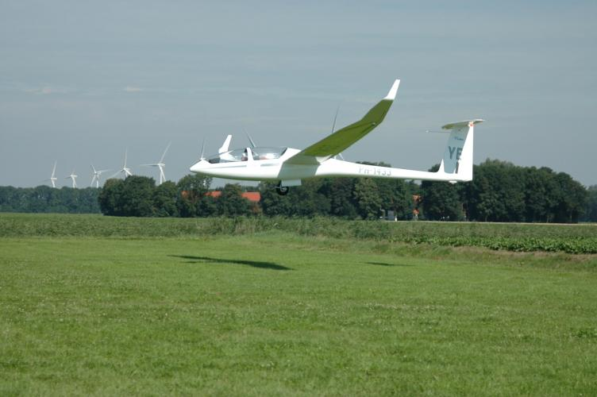

De DG-1000 is de prestatietweezitter van Zc Flevo. De DG-1000 wordt gebruikt voor aerobatics-, overland-, prestatie-, opleidings- en Kennismakingsvluchten. Daarnaast kan de DG-1000 ook gebruikt worden bij wedstrijden. Speciaal hiervoor beschikt de DG-1000 over waterballast tanks in de vleugels. PH-1433 is nieuw gekocht en vliegt sinds 2009 bij Zc Flevo. Deze zwever is bij ons voorbehouden aan GPL-houders.
| Registratie | Callsign | Bouwjaar | Spanwijdte | Lengte | leeggewicht | Overtreksnelheid | Maximum Snelheid | Beste Glijgetal | Aerobatics |
|---|---|---|---|---|---|---|---|---|---|
| pH-1433 | YE | 2008 | 18-20 Meter | 8,57 meter | 415 Kg | Onbekend | 270 Km/h | 46,6 (bij 120 Km/h) | Alle Manoeurvres |